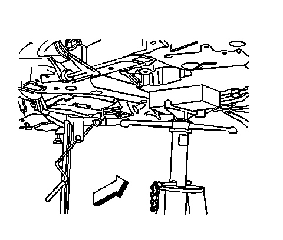
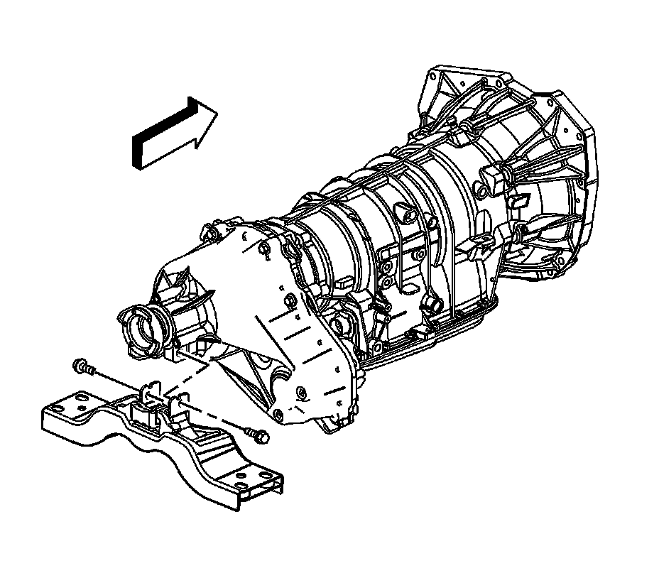
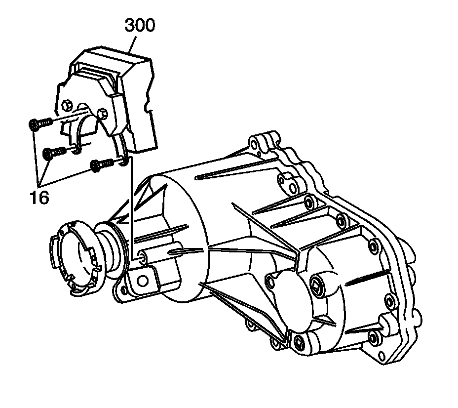

Dampener/Tuned Absorber Replacement
Dampener/Tuned Absorber Replacement
Removal Procedure

1. Remove the rear propeller shaft. Refer to Rear Propeller Shaft Replacement (RWD) (Rear Propeller Shaft Replacement (RWD)) .
2. Support the transmission with a suitable jack and a block of wood.
3. Remove the transmission mount-to-body bolts.

4. Remove the transmission mount-to-transmission bolts.
5. Remove the transmission mount.
6. Lower the transmission/transfer case assembly .

7. Remove the dampener bolts (16).
8. Remove the dampener (300) from the transfer case.
Installation Procedure
1. Install the dampener (300) to the transfer case.
Notice: Refer to Fastener Notice (Fastener Notice) .
2. Install the dampener bolts (16).
Tighten the dampener bolts to 27 N.m (20 lb ft).
3. Lower the transmission/transfer case assembly .
4. Install the transmission mount.
5. Install the transmission mount-to-transmission bolts.
Tighten the bolts to 110 N.m (81 lb ft).
6. Install the transmission mount-to-body bolts.
Tighten the bolts to 60 N.m (44 lb ft).
7. Remove the support from the transmission.
8. Install the rear propeller shaft. Refer to Rear Propeller Shaft Replacement (RWD) (Rear Propeller Shaft Replacement (RWD)) .